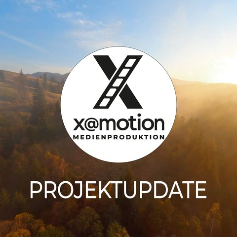

Kürbisse Glühen 2025 – Social-Media-Reihe und Aftermovie von x@motion

Auch 2025 sind wir wieder stolzer Medienpartner der Thüringer Bergteufel und begleiten das Kürbisse Glühen mit unserer Kameraarbeit. Neben dem klassischen Aftermovie, das die Magie des Abends festhält, haben wir in diesem Jahr erneut eine Social-Media-Reihe entwickelt, die bereits Wochen vor dem Event für Aufmerksamkeit sorgt.
Reichweite auf Social Media – mit System
Knapp fünf Wochen vor dem Event haben wir den ersten Teaser veröffentlicht. Danach heißt es: jeden Samstag ein neues Reel! Der Aufmacher ist stets unser Claim: „Noch XX Mal schlafen …" – eine einfache, aber wirkungsvolle Art, die Vorfreude auf das Event spürbar zu machen.
Die Serie ist klar getaktet:
- 28, 21, 14 und 7 Tage vorher: Countdown-Reels mit klarer Tage- (besser Nächte-) Angabe
- Dazwischen: thematische Clips ohne Zahl, um Spannung zu halten
- 14 Tage vorher: der Aftermovie aus 2024, in zwei Teilen
- Kurz vor dem Event: ein Vorbereitungs-Clip, der hinter die Kulissen blicken lässt
Ziel: Mehr Sichtbarkeit und mehr Besucher
Schon die nicht-repräsentative Umfrage des letzten Jahres zeigte: ein großer Teil der überregionalen Besucher erfuhr durch unsere Videos von der Veranstaltung. Dieses Feedback ist für uns Ansporn, auch 2025 wieder für einen Besucherrekord zu sorgen.
Natürlich zeigen wir die Clips auch auf unseren eigenen Kanälen – allerdings immer erst dann, wenn sie offiziell veröffentlicht wurden. Seid gespannt, was noch kommt!